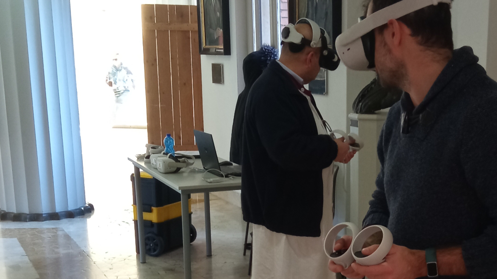
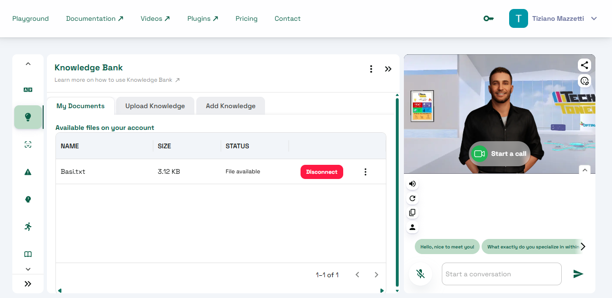
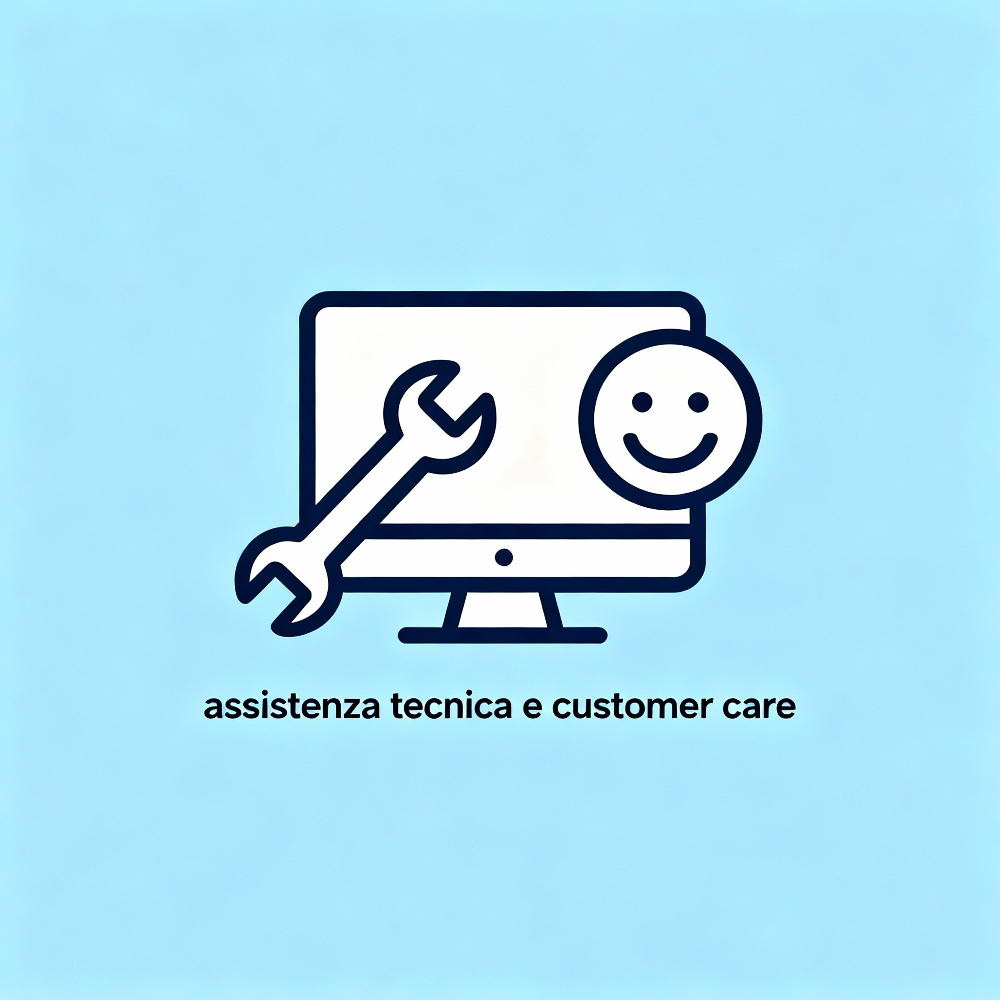

Percorsi pratici per padroneggiare le nuove tecnologie. Dal Metaverso all'AI Generativa, guido professionisti e aziende nell'adozione degli strumenti del futuro con un approccio giovane e dinamico.
Formazione pratica sull'utilizzo di visori VR e navigazione nel Metaverso. Assistenza nella creazione e gestione di stanze virtuali per meeting ed eventi immersivi.
Corsi introduttivi per chi parte da zero. Impara a dialogare con le intelligenze artificiali, creare Avatar digitali e utilizzare i nuovi strumenti Web3 nella vita quotidiana.
Consulenza per la scelta e l'adozione di dispositivi hardware e software. Aiuto a capire quale tecnologia adottare e come configurarla al meglio.
Alfabetizzazione digitale completa. Comprendere i concetti base di internet, sicurezza informatica e primi passi con gli strumenti di intelligenza artificiale generativa.
Workshop pratico sulla creazione di Avatar dotati di intelligenza artificiale. Come personalizzare l'esperienza utente e integrare assistenti virtuali nei propri progetti.
Utilizzo avanzato di visori per la realtà virtuale. Realizzazione e gestione di stanze virtuali metaversali per scopi lavorativi o ricreativi.

Nella precedente esperienza, avevamo la necessità di formare utenti all'uso di tecnologie immersive e spazi virtuali.
Realizzazione di stanze virtuali e sessioni di formazione pratica per l'utilizzo corretto dei visori.
Utenti autonomi nella navigazione del Metaverso e nella realizzazione di stanze virtuali.

Mi sono interessato a questa tecnologia autonomamente ed ho pensato che potesse essere utile guidare altre persone all'utilizzo di questa tecnologia.
Studio, ricerca e creazione di Avatar dotati di AI per simulare interazioni umane in ambienti digitali.
Ho sempre ricevuto riscontri positivi ed alto indice di gradimento sia da parte di chi ho formato come sviluppatore che di chi utilizza il servizio.

Supportare clienti nella risoluzione di problemi hardware e software quotidiani.
Intervento diretto per riparazioni e consulenza per l'acquisto, unendo competenza tecnica a doti comunicative.
Fidelizzazione della clientela e risoluzione efficace delle problematiche tecniche.
Assolutamente no. Il mio approccio è focalizzato sull'utilizzo pratico delle tecnologie e sull'alfabetizzazione digitale.
Sì, ho esperienza specifica come formatore nell'uso di dispositivi Web3. Posso organizzare sessioni pratiche per far provare la tecnologia in prima persona.
Sì, ho un background come tecnico informatico e tecnico di rete junior. Posso supportare sia nella formazione che nella scelta e manutenzione dei dispositivi.